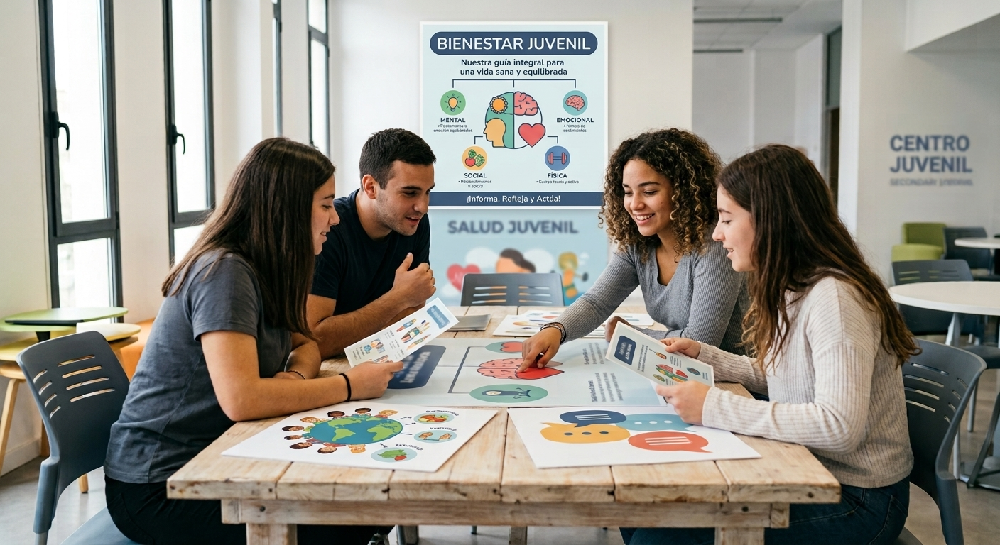

Introducción a la Toma de Decisiones
La toma de decisiones responsable nos permite cuidar nuestra vida, nuestro cuerpo y nuestro entorno social. Decidir con responsabilidad implica informarse, reflexionar sobre las consecuencias de nuestras acciones y ejercer plenamente derechos fundamentales como la salud, el consentimiento y el acceso a información científica.
Derecho Elegido: Derecho a la Salud y Prevención
El derecho a la salud garantiza que todas las personas puedan alcanzar el bienestar físico, mental y social. Dentro de este eje, la prevención juega un papel fundamental para evitar situaciones de riesgo, ITS, embarazos no deseados y adicciones mediante la educación y el cuidado responsable.

Temas Vinculados y Consentimiento
Para que una decisión relacionada con la salud y la prevención sea verdaderamente responsable, es indispensable el concepto de consentimiento. Decir "sí" o "no" de forma consciente protege nuestra autonomía y respeta los límites personales en cualquier vínculo o tratamiento médico.
| Nivel de Prevención | Objetivo Principal | Ejemplo Práctico |
|---|---|---|
| Primaria | Evitar la aparición de problemas o enfermedades. | Talleres sobre uso de métodos anticonceptivos y prevención de adicciones. |
| Secundaria | Detección temprana y tratamiento oportuno. | Controles médicos periódicos y testeo voluntario de ITS. |
| Terciaria | Mejorar la calidad de vida ante situaciones diagnosticadas. | Acompañamiento psicológico y apoyo terapéutico integral. |
Fuentes
1. Organización Mundial de la Salud (OMS) - Salud mental del adolescente
2. Ministerio de Salud Pública (Uruguay) - Guía de Salud Sexual y Reproductiva